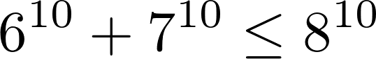

Также широко применяется в физике, допустим при выводе закона интерференции.
Доказательство:
Доказательство неравенства проводится методом математической индукции по n. При n = 1 неравенство, очевидно, верно. Допустим, что оно верно для n, докажем его верность для n+1: